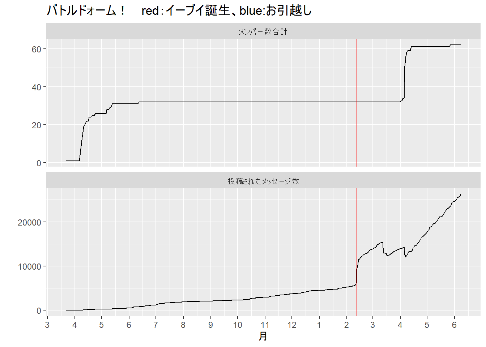
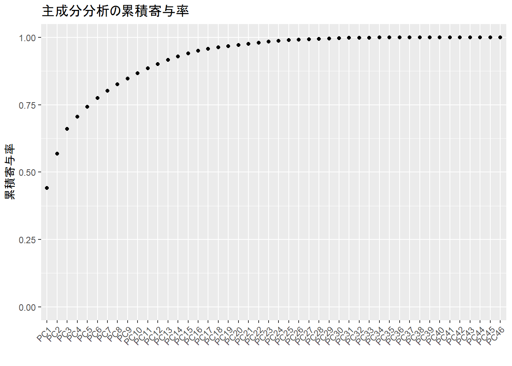
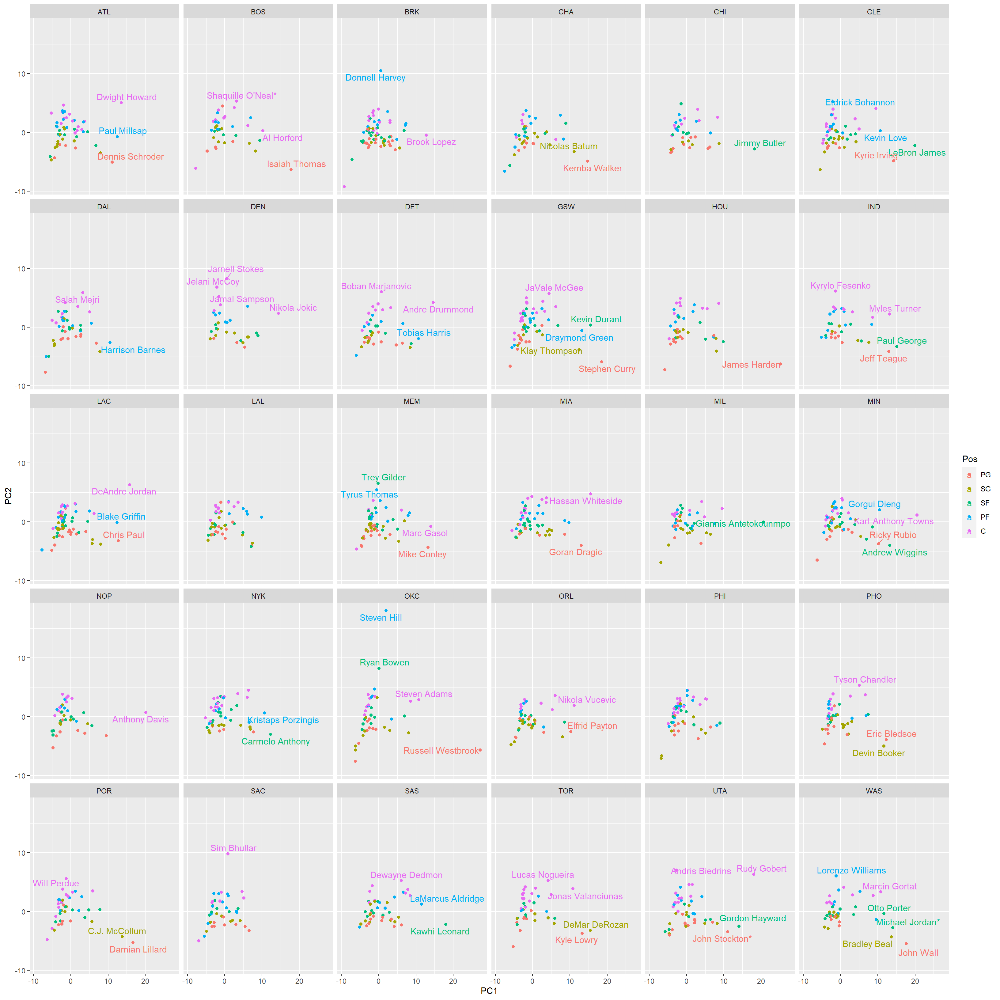
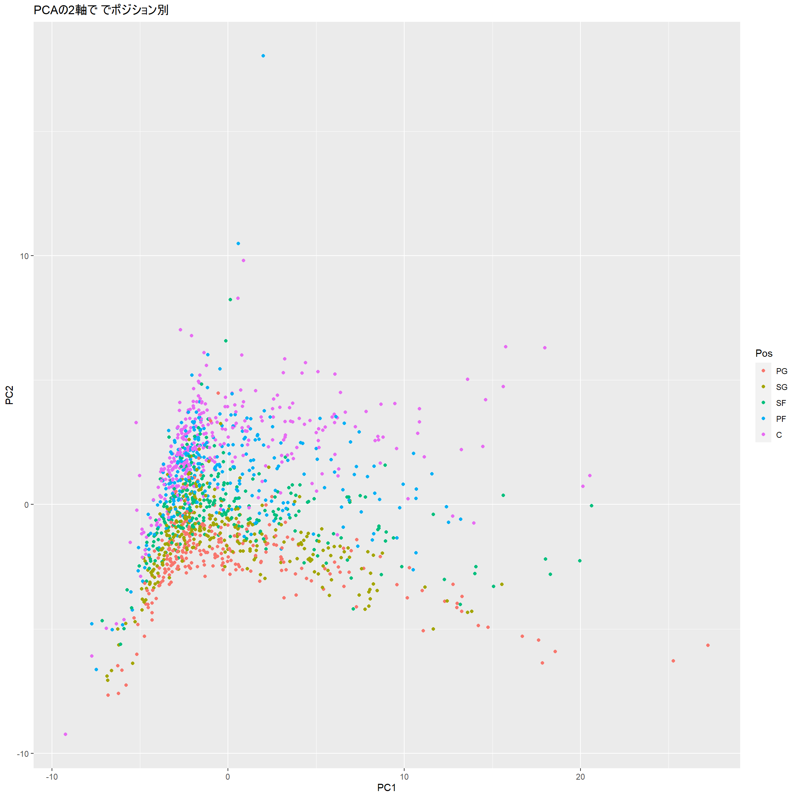

Chapter: 4 画像処理と多クラス分類
4.1 概要説明
あとで書く
4.2 結果
あとで書く
4.3 ライブラリ読み込み
4.4 データ読み込み
22秒くらいかかる。
tic()
path_vec <- here(paste0("data/hiragana/", 1:6069, ".png"))
data <- path_vec %>% map(load.image) %>% tibble(images = .)
toc()## 15.13 sec elapsed4.5 「あいうえお」を見てみる

## [[1]]
## Image. Width: 72 pix Height: 76 pix Depth: 1 Colour channels: 1
##
## [[2]]
## Image. Width: 72 pix Height: 76 pix Depth: 1 Colour channels: 1
##
## [[3]]
## Image. Width: 72 pix Height: 76 pix Depth: 1 Colour channels: 1
##
## [[4]]
## Image. Width: 72 pix Height: 76 pix Depth: 1 Colour channels: 1
##
## [[5]]
## Image. Width: 72 pix Height: 76 pix Depth: 1 Colour channels: 14.6 前処理
余計な部分を削る。
横は20～50まで、縦は20～60まで。
preprocessing <- function(img){
mat <- img %>% as.matrix()
mat_reshape_img <- mat[20:50, 20:60] %>% as.cimg()
mat_reshape_img
}
data <- data %>% mutate(processed = map(images, preprocessing))
data$processed[[1]] %>% plot
画像を一次元のベクトルに変換する。
正解のラベルをつける。
わ行の「い」と「う」と「え」、は「い2」「う2」「え2」
旧文字の「い」と「え」は「い3」「え3」とした。
s <- str_c("あいうえおかきくけこさしすせそたちつてとなにぬねのはひふへほまみむめも")
s <- str_split(s, pattern = "")[[1]]
s <- c(s ,"や","い2","ゆ","え2","よ","ら","り","る","れ","ろ","わ","い3","う2","え3","を","ん")
data <- data %>%
mutate(vec_img = processed %>% map(as.vector)) %>%
mutate(label = rep(s, 119)) # それぞれ119文字ずつある。
data %>% head()## # A tibble: 6 x 4
## images processed vec_img label
## <list> <list> <list> <chr>
## 1 <cimg> <cimg> <dbl [1,271]> あ
## 2 <cimg> <cimg> <dbl [1,271]> い
## 3 <cimg> <cimg> <dbl [1,271]> う
## 4 <cimg> <cimg> <dbl [1,271]> え
## 5 <cimg> <cimg> <dbl [1,271]> お
## 6 <cimg> <cimg> <dbl [1,271]> かmake_data <- function(data, start, end){
d <- data %>% filter(label %in% s[start:end]) %>% select(-images, -processed)
tic()
cols <- paste0("pixel", 1:1271)
res <- d$vec_img[[1]]
names(res) <- cols
for (i in 2:(nrow(d))) {
tmp <- d$vec_img[[i]]
names(tmp) <- cols
res <- res %>% bind_rows(tmp)
}
res <- res %>% mutate(label = as.factor(d$label))
toc()
return(res)
}
# 3300秒くらいかかる
# res_51 <- make_data(data,1,51)
# 一度読み込んだものをrdsに保存しておいた
res_51 <- read_rds(here("data/res_51.rds"))
res_2 <- res_51 %>% filter(label %in% s[1:2]) %>% mutate(label = as.factor(label))
res_10 <- res_51 %>% filter(label %in% s[1:10]) %>% mutate(label = as.factor(label))
res_30 <- res_51 %>% filter(label %in% s[1:30]) %>% mutate(label = as.factor(label))4.7 モデリング
4.7.1 データをtrain/testに80%/20%で分割する
4.7.2 tidymodelsの準備
4.7.3 random forestとxgboostのモデルを定義
# random forest
model_rf <-
rand_forest() %>%
set_engine("ranger") %>%
set_mode(mode)
#boosted trees
model_xgb <-
boost_tree() %>%
set_engine("xgboost") %>%
set_mode(mode)
model_list <-
list(rf = model_rf,
xgb = model_xgb)
flow_list <- workflow() %>% add_recipe(rec)
flow_list <- map(.x = model_list, ~add_model(x = flow_list, spec = .x))4.8 計測
4.8.1 計測する（２文字）
rfとxgboostそれぞれ50回ずつfitさせる時間を計測する
4.8.2 計測結果（２文字）
## Warning in bind_rows_(x, .id): Unequal factor levels: coercing to character## Warning in bind_rows_(x, .id): binding character and factor vector, coercing into character vector
## Warning in bind_rows_(x, .id): binding character and factor vector, coercing into character vector## Unit: seconds
## expr min lq mean median uq max neval
## fit_rf <- fit(flow_list$rf, data = baked_train) 1.207564 1.207564 1.350436 1.350436 1.493308 1.493308 2
## fit_xgb <- fit(flow_list$xgb, data = baked_train) 1.202549 1.202549 1.207039 1.207039 1.211529 1.211529 2my_plot <- function(time_rf, time_xgb, bins=20){
tibble(rf = time_rf$time/1e+09, xgb = time_xgb$time/1e+09) %>%
pivot_longer(everything()) %>%
ggplot(aes(value)) +
geom_histogram(bins = bins) +
facet_wrap(vars(name), ncol = 1)
}
my_plot(time_rf_2, time_xgb_2, bins = 20)
4.8.3 予測結果（２文字）
my_predict <- function(){
fit_rf <- fit(flow_list$rf, data = bake(rec, test))
pred_rf <- predict(fit_rf, new_data = bake(rec, test))
pred_conf_rf <- caret::confusionMatrix(pred_rf$.pred_class, test$label)
fit_xgb <- fit(flow_list$xgb, data = bake(rec, test))
pred_xgb <- predict(fit_xgb, new_data = bake(rec, test))
pred_conf_xgb <- caret::confusionMatrix(pred_xgb$.pred_class, test$label)
return(list(rf = pred_conf_rf$table,
xgb= pred_conf_xgb$table))
}
my_predict()## $rf
## Reference
## Prediction あ い
## あ 23 0
## い 0 23
##
## $xgb
## Reference
## Prediction あ い
## あ 23 0
## い 0 234.8.4 計測する（１０文字）
rfとxgboostそれぞれ50回ずつfitさせる時間を計測する。
データの作成に4分くらいかかる。
fitには全部で11分くらい。
# set recipes
rec <- train %>%
recipe(formula = formula)
rec_preped <- prep(rec)
flow_list <- workflow() %>% add_recipe(rec)
flow_list <- map(.x = model_list, ~add_model(x = flow_list, spec = .x))
set.seed(7777)
splits <- res_10 %>% initial_split(prop = 0.8, strata = label)## Warning: Too little data to stratify. Unstratified resampling will be used.4.8.5 計測結果（１０文字）
## Warning in bind_rows_(x, .id): Unequal factor levels: coercing to character## Warning in bind_rows_(x, .id): binding character and factor vector, coercing into character vector
## Warning in bind_rows_(x, .id): binding character and factor vector, coercing into character vector## Unit: seconds
## expr min lq mean median uq max neval
## fit_rf <- fit(flow_list$rf, data = baked_train) 3.02797 3.053799 3.313087 3.063390 3.095673 15.011433 50
## fit_xgb <- fit(flow_list$xgb, data = baked_train) 8.13080 8.285678 8.391799 8.312129 8.454143 9.271326 50
4.8.6 予測結果（１０文字）
## $rf
## Reference
## Prediction あ い う え お か き く け こ
## あ 25 0 0 0 0 0 0 0 0 0
## い 0 25 0 0 0 0 0 0 0 0
## う 0 0 15 0 0 0 0 0 0 0
## え 0 0 0 23 0 0 0 0 0 0
## お 0 0 0 0 19 0 0 0 0 0
## か 0 0 0 0 0 21 0 0 0 0
## き 0 0 0 0 0 0 30 0 0 0
## く 0 0 0 0 0 0 0 26 0 0
## け 0 0 0 0 0 0 0 0 23 0
## こ 0 0 0 0 0 0 0 0 0 30
##
## $xgb
## Reference
## Prediction あ い う え お か き く け こ
## あ 25 0 0 0 0 0 0 0 0 0
## い 0 25 0 0 0 0 0 0 0 0
## う 0 0 15 0 0 0 0 0 0 0
## え 0 0 0 23 0 0 0 0 0 0
## お 0 0 0 0 19 0 0 0 0 0
## か 0 0 0 0 0 21 0 0 0 0
## き 0 0 0 0 0 0 30 0 0 0
## く 0 0 0 0 0 0 0 26 0 0
## け 0 0 0 0 0 0 0 0 23 0
## こ 0 0 0 0 0 0 0 0 0 304.8.7 計測する（３０文字）
rfとxgboostそれぞれ50回ずつfitさせる時間を計測する。
fitには全部で分くらい。
# set recipes
rec <- train %>%
recipe(formula = formula)
rec_preped <- prep(rec)
flow_list <- workflow() %>% add_recipe(rec)
flow_list <- map(.x = model_list, ~add_model(x = flow_list, spec = .x))
set.seed(7777)
splits <- res_30 %>% initial_split(prop = 0.8, strata = label)## Warning: Too little data to stratify. Unstratified resampling will be used.4.8.8 計測結果（３０文字）
## Warning in bind_rows_(x, .id): Unequal factor levels: coercing to character## Warning in bind_rows_(x, .id): binding character and factor vector, coercing into
## character vector
## Warning in bind_rows_(x, .id): binding character and factor vector, coercing into
## character vector## Unit: seconds
## expr min lq mean median
## fit_rf <- fit(flow_list$rf, data = baked_train) 12.92101 13.17005 14.75011 14.36868
## fit_xgb <- fit(flow_list$xgb, data = baked_train) 58.12537 60.32577 68.51813 64.00283
## uq max neval
## 15.53056 20.77089 50
## 68.39914 155.76152 50
4.8.9 予測結果（３０文字）
## $rf
## Reference
## Prediction あ い う え お か き く け こ さ し す せ そ た ち つ て と な に ぬ ね の
## あ 25 0 0 0 0 0 0 0 0 0 0 0 0 0 0 0 0 0 0 0 0 0 0 0 0
## い 0 27 0 0 0 0 0 0 0 0 0 0 0 0 0 0 0 0 0 0 0 0 0 0 0
## う 0 0 29 0 0 0 0 0 0 0 0 0 0 0 0 0 0 0 0 0 0 0 0 0 0
## え 0 0 0 22 0 0 0 0 0 0 0 0 0 0 0 0 0 0 0 0 0 0 0 0 0
## お 0 0 0 0 22 0 0 0 0 0 0 0 0 0 0 0 0 0 0 0 0 0 0 0 0
## か 0 0 0 0 0 27 0 0 0 0 0 0 0 0 0 0 0 0 0 0 0 0 0 0 0
## き 0 0 0 0 0 0 26 0 0 0 0 0 0 0 0 0 0 0 0 0 0 0 0 0 0
## く 0 0 0 0 0 0 0 27 0 0 0 0 0 0 0 0 0 0 0 0 0 0 0 0 0
## け 0 0 0 0 0 0 0 0 29 0 0 0 0 0 0 0 0 0 0 0 0 0 0 0 0
## こ 0 0 0 0 0 0 0 0 0 17 0 0 0 0 0 0 0 0 0 0 0 0 0 0 0
## さ 0 0 0 0 0 0 0 0 0 0 25 0 0 0 0 0 0 0 0 0 0 0 0 0 0
## し 0 0 0 0 0 0 0 0 0 0 0 16 0 0 0 0 0 0 0 0 0 0 0 0 0
## す 0 0 0 0 0 0 0 0 0 0 0 0 20 0 0 0 0 0 0 0 0 0 0 0 0
## せ 0 0 0 0 0 0 0 0 0 0 0 0 0 24 0 0 0 0 0 0 0 0 0 0 0
## そ 0 0 0 0 0 0 0 0 0 0 0 0 0 0 26 0 0 0 0 0 0 0 0 0 0
## た 0 0 0 0 0 0 0 0 0 0 0 0 0 0 0 24 0 0 0 0 0 0 0 0 0
## ち 0 0 0 0 0 0 0 0 0 0 0 0 0 0 0 0 26 0 0 0 0 0 0 0 0
## つ 0 0 0 0 0 0 0 0 0 0 0 0 0 0 0 0 0 23 0 0 0 0 0 0 0
## て 0 0 0 0 0 0 0 0 0 0 0 0 0 0 0 0 0 0 18 0 0 0 0 0 0
## と 0 0 0 0 0 0 0 0 0 0 0 0 0 0 0 0 0 0 0 24 0 0 0 0 0
## な 0 0 0 0 0 0 0 0 0 0 0 0 0 0 0 0 0 0 0 0 20 0 0 0 0
## に 0 0 0 0 0 0 0 0 0 0 0 0 0 0 0 0 0 0 0 0 0 24 0 0 0
## ぬ 0 0 0 0 0 0 0 0 0 0 0 0 0 0 0 0 0 0 0 0 0 0 19 0 0
## ね 0 0 0 0 0 0 0 0 0 0 0 0 0 0 0 0 0 0 0 0 0 0 0 24 0
## の 0 0 0 0 0 0 0 0 0 0 0 0 0 0 0 0 0 0 0 0 0 0 0 0 21
## は 0 0 0 0 0 0 0 0 0 0 0 0 0 0 0 0 0 0 0 0 0 0 0 0 0
## ひ 0 0 0 0 0 0 0 0 0 0 0 0 0 0 0 0 0 0 0 0 0 0 0 0 0
## ふ 0 0 0 0 0 0 0 0 0 0 0 0 0 0 0 0 0 0 0 0 0 0 0 0 0
## へ 0 0 0 0 0 0 0 0 0 0 0 0 0 0 0 0 0 0 0 0 0 0 0 0 0
## ほ 0 0 0 0 0 0 0 0 0 0 0 0 0 0 0 0 0 0 0 0 0 0 0 0 0
## Reference
## Prediction は ひ ふ へ ほ
## あ 0 0 0 0 0
## い 0 0 0 0 0
## う 0 0 0 0 0
## え 0 0 0 0 0
## お 0 0 0 0 0
## か 0 0 0 0 0
## き 0 0 0 0 0
## く 0 0 0 0 0
## け 0 0 0 0 0
## こ 0 0 0 0 0
## さ 0 0 0 0 0
## し 0 0 0 0 0
## す 0 0 0 0 0
## せ 0 0 0 0 0
## そ 0 0 0 0 0
## た 0 0 0 0 0
## ち 0 0 0 0 0
## つ 0 0 0 0 0
## て 0 0 0 0 0
## と 0 0 0 0 0
## な 0 0 0 0 0
## に 0 0 0 0 0
## ぬ 0 0 0 0 0
## ね 0 0 0 0 0
## の 0 0 0 0 0
## は 26 0 0 0 0
## ひ 0 31 0 0 0
## ふ 0 0 25 0 0
## へ 0 0 0 22 0
## ほ 0 0 0 0 24
##
## $xgb
## Reference
## Prediction あ い う え お か き く け こ さ し す せ そ た ち つ て と な に ぬ ね の
## あ 25 0 0 0 0 0 0 0 0 0 0 0 0 0 0 0 0 0 0 0 0 0 0 0 0
## い 0 27 0 0 0 0 0 0 0 0 0 0 0 0 0 0 0 0 0 0 0 0 0 0 0
## う 0 0 29 0 0 0 0 0 0 0 0 0 0 0 0 0 0 0 0 0 0 0 0 0 0
## え 0 0 0 22 0 0 0 0 0 0 0 0 0 0 0 0 0 0 0 0 0 0 0 0 0
## お 0 0 0 0 22 0 0 0 0 0 0 0 0 0 0 0 0 0 0 0 0 0 0 0 0
## か 0 0 0 0 0 27 0 0 0 0 0 0 0 0 0 0 0 0 0 0 0 0 0 0 0
## き 0 0 0 0 0 0 26 0 0 0 0 0 0 0 0 0 0 0 0 0 0 0 0 0 0
## く 0 0 0 0 0 0 0 27 0 0 0 0 0 0 0 0 0 0 0 0 0 0 0 0 0
## け 0 0 0 0 0 0 0 0 29 0 0 0 0 0 0 0 0 0 0 0 0 0 0 0 0
## こ 0 0 0 0 0 0 0 0 0 17 0 0 0 0 0 0 0 0 0 0 0 0 0 0 0
## さ 0 0 0 0 0 0 0 0 0 0 25 0 0 0 0 0 0 0 0 0 0 0 0 0 0
## し 0 0 0 0 0 0 0 0 0 0 0 16 0 0 0 0 0 0 0 0 0 0 0 0 0
## す 0 0 0 0 0 0 0 0 0 0 0 0 20 0 0 0 0 0 0 0 0 0 0 0 0
## せ 0 0 0 0 0 0 0 0 0 0 0 0 0 24 0 0 0 0 0 0 0 0 0 0 0
## そ 0 0 0 0 0 0 0 0 0 0 0 0 0 0 26 0 0 0 0 0 0 0 0 0 0
## た 0 0 0 0 0 0 0 0 0 0 0 0 0 0 0 24 0 0 0 0 0 0 0 0 0
## ち 0 0 0 0 0 0 0 0 0 0 0 0 0 0 0 0 26 0 0 0 0 0 0 0 0
## つ 0 0 0 0 0 0 0 0 0 0 0 0 0 0 0 0 0 23 0 0 0 0 0 0 0
## て 0 0 0 0 0 0 0 0 0 0 0 0 0 0 0 0 0 0 18 0 0 0 0 0 0
## と 0 0 0 0 0 0 0 0 0 0 0 0 0 0 0 0 0 0 0 24 0 0 0 0 0
## な 0 0 0 0 0 0 0 0 0 0 0 0 0 0 0 0 0 0 0 0 20 0 0 0 0
## に 0 0 0 0 0 0 0 0 0 0 0 0 0 0 0 0 0 0 0 0 0 24 0 0 0
## ぬ 0 0 0 0 0 0 0 0 0 0 0 0 0 0 0 0 0 0 0 0 0 0 19 0 0
## ね 0 0 0 0 0 0 0 0 0 0 0 0 0 0 0 0 0 0 0 0 0 0 0 24 0
## の 0 0 0 0 0 0 0 0 0 0 0 0 0 0 0 0 0 0 0 0 0 0 0 0 21
## は 0 0 0 0 0 0 0 0 0 0 0 0 0 0 0 0 0 0 0 0 0 0 0 0 0
## ひ 0 0 0 0 0 0 0 0 0 0 0 0 0 0 0 0 0 0 0 0 0 0 0 0 0
## ふ 0 0 0 0 0 0 0 0 0 0 0 0 0 0 0 0 0 0 0 0 0 0 0 0 0
## へ 0 0 0 0 0 0 0 0 0 0 0 0 0 0 0 0 0 0 0 0 0 0 0 0 0
## ほ 0 0 0 0 0 0 0 0 0 0 0 0 0 0 0 0 0 0 0 0 0 0 0 0 0
## Reference
## Prediction は ひ ふ へ ほ
## あ 0 0 0 0 0
## い 0 0 0 0 0
## う 0 0 0 0 0
## え 0 0 0 0 0
## お 0 0 0 0 0
## か 0 0 0 0 0
## き 0 0 0 0 0
## く 0 0 0 0 0
## け 0 0 0 0 0
## こ 0 0 0 0 0
## さ 0 0 0 0 0
## し 0 0 0 0 0
## す 0 0 0 0 0
## せ 0 0 0 0 0
## そ 0 0 0 0 0
## た 0 0 0 0 0
## ち 0 0 0 0 0
## つ 0 0 0 0 0
## て 0 0 0 0 0
## と 0 0 0 0 0
## な 0 0 0 0 0
## に 0 0 0 0 0
## ぬ 0 0 0 0 0
## ね 0 0 0 0 0
## の 0 0 0 0 0
## は 26 0 0 0 0
## ひ 0 31 0 0 0
## ふ 0 0 25 0 0
## へ 0 0 0 22 0
## ほ 0 0 0 0 24